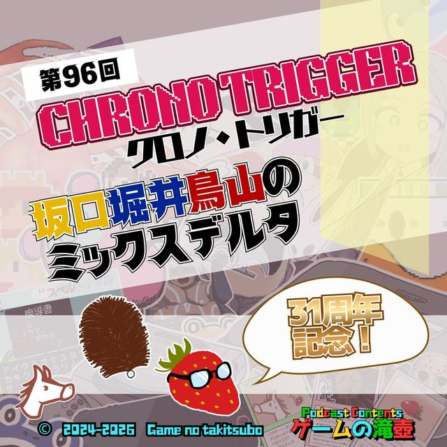
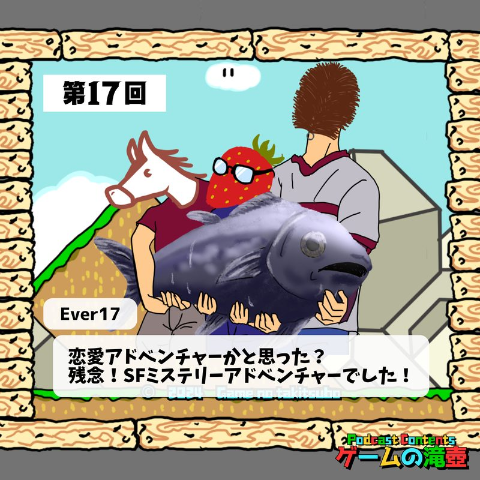

パラノマサイト FILE23 本所七不思議
ポッドキャスト「ゲームの滝壺」で「パラノマサイト FILE23 本所七不思議」が話題に出た回の一覧です。
滝壺での登場 5回メインテーマとして語られた回があります。
 #162024.09.11⭐ メインで語られた回
かまいたちの夜、パラノマサイト、筋肉すくい…残暑に遊びたいゲーム6選！
▶ 25:33〜 パラノマサイト FILE23 本所七不思議ミステリーやホラーゲームをはじめとし、お祭り系や夏に関連するゲームも…残暑に遊びたいゲームを語ります。
#162024.09.11⭐ メインで語られた回
かまいたちの夜、パラノマサイト、筋肉すくい…残暑に遊びたいゲーム6選！
▶ 25:33〜 パラノマサイト FILE23 本所七不思議ミステリーやホラーゲームをはじめとし、お祭り系や夏に関連するゲームも…残暑に遊びたいゲームを語ります。

#962026.03.11💬 トーク内で登場 クロノ・トリガー31周年記念！ 坂口堀井鳥山のミックスデルタ クロノ・トリガー31周年おめでとうございます！！！ #952026.03.04💬 トーク内で登場
わるい状態 ～わるい村 ep05～ 同時上映 初代バイオハザード＆Tiling Forest
わるい状態には ご用心
#952026.03.04💬 トーク内で登場
わるい状態 ～わるい村 ep05～ 同時上映 初代バイオハザード＆Tiling Forest
わるい状態には ご用心
 #862026.01.07💬 トーク内で登場
新春！ 五十音全部にふさわしいゲームタイトルを集めて滝壺かるたを作ろう！
滝壺にまつわるゲームタイトルを集めに集めて、ゲームタイトルかるたを考案します！
#862026.01.07💬 トーク内で登場
新春！ 五十音全部にふさわしいゲームタイトルを集めて滝壺かるたを作ろう！
滝壺にまつわるゲームタイトルを集めに集めて、ゲームタイトルかるたを考案します！

#172024.09.18💬 トーク内で登場 Ever17「恋愛アドベンチャーかと思った？ 残念！ SFミステリーアドベンチャーでした！」 ゲームの滝壺がついに第17回ということで、17と言えばもちろん「Ever17」！ ネタバレ絶対厳禁のタイトルにつきストーリーの核心について番組内では話しませんが、ひゅうま（未プレイ）には合意の上ですべてを伝えます。TALKED TOGETHER同じ回で話題に出たタイトル
🎧 ▶付きの時刻を押すと、その話題の頭からその場で再生できます。
「パラノマサイト FILE23 本所七不思議」の話がもっと聴きたくなったら、おたよりでリクエストしてもらえると番組が喜びます。